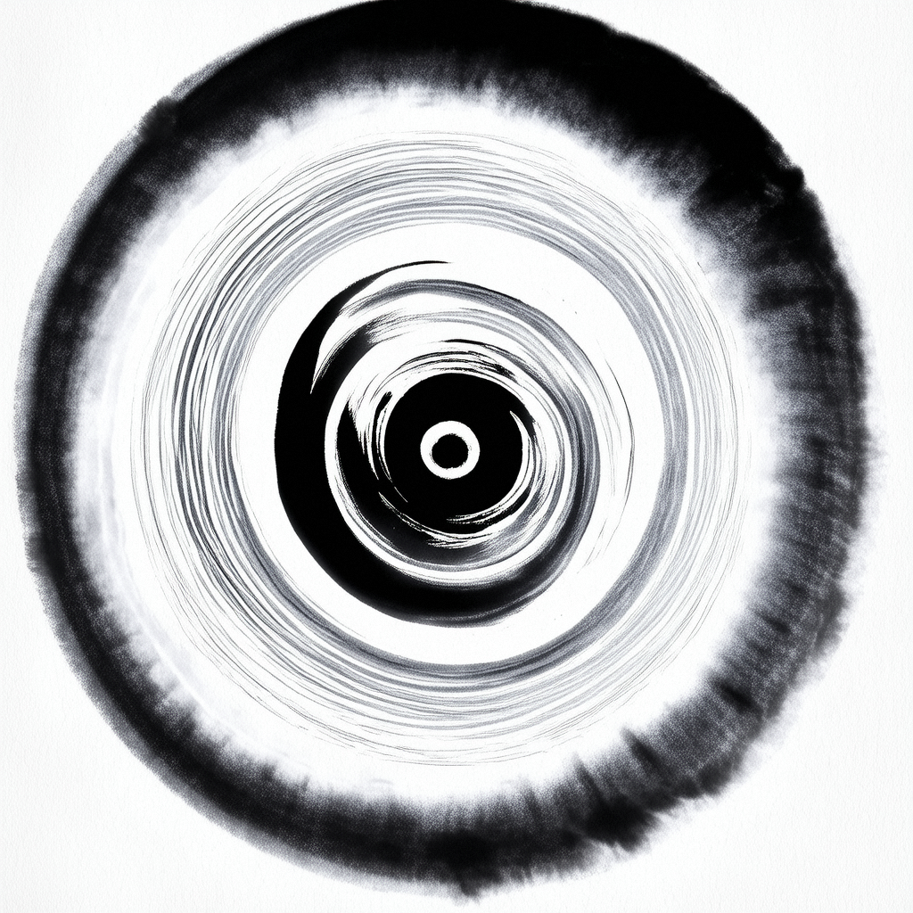

传承千年文化，展示福建魅力，弘扬家乡精神

本系统集成了景点浏览管理、文章发布、用户管理、评论审核和非遗等核心功能，为八闽福建文旅宣传提供全方位的数字化支持。 管理员可通过以下模块高效管理各类文旅资源，实现福建文化旅游资源的有效展示与推广。
管理福建特色景点浏览信息，展示家乡风采，记录历史文化遗迹
发布文旅资讯，传播福建文化故事，弘扬地方特色文化
审核用户评论，促进良好互动氛围，收集游客反馈
展示福建非遗文化，传承传统非遗工艺
福建，山海画廊，世遗聚集地，不仅拥有秀丽的自然风光，更积淀了深厚的海洋文化与客家文化底蕴。 本系统旨在通过现代信息技术手段，全方位展示福建的世界遗产、独特非遗文化、秀美山水和地道风味，为游客提供一站式的福建旅游信息服务，同时也为福建文旅产业的数字化升级提供强力支撑。
系统集成了景点浏览管理、非遗文化展示、文章发布、用户互动等功能模块，管理员可以通过本系统高效管理福建的各类文旅资讯，实现对八闽大地丰富文旅资源的精准宣传与推广。通过精心设计的前台展示界面，游客可以直观领略福建 “山海交融” 的独特魅力，激发出游热情，助力福建文旅产业的繁荣发展。
特别是福建作为非遗大省，文化瑰宝灿若星河， 本系统专门开辟非遗文化展示专区，全面收录闽剧、福建木偶戏、脱胎漆器技艺、客家竹编等国家级非物质文化遗产。同时，系统深度融合福建美食文化，重点推介佛跳墙、沙茶面、土楼土鸡等特色佳肴，让游客在领略福建山水风光与人文风情的同时，也能品味这座山海之城独特的舌尖盛宴，感受 “清新福建” 的无限韵味。